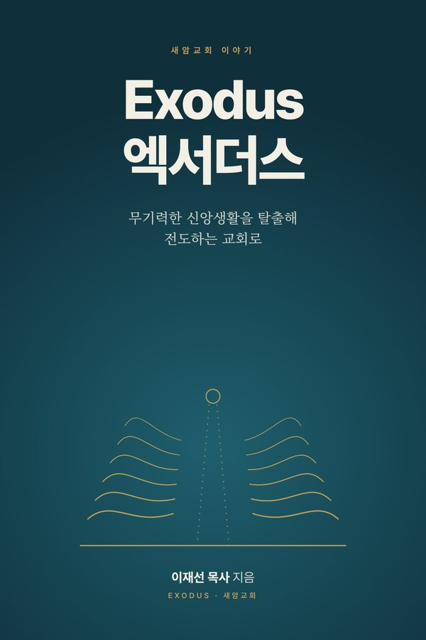
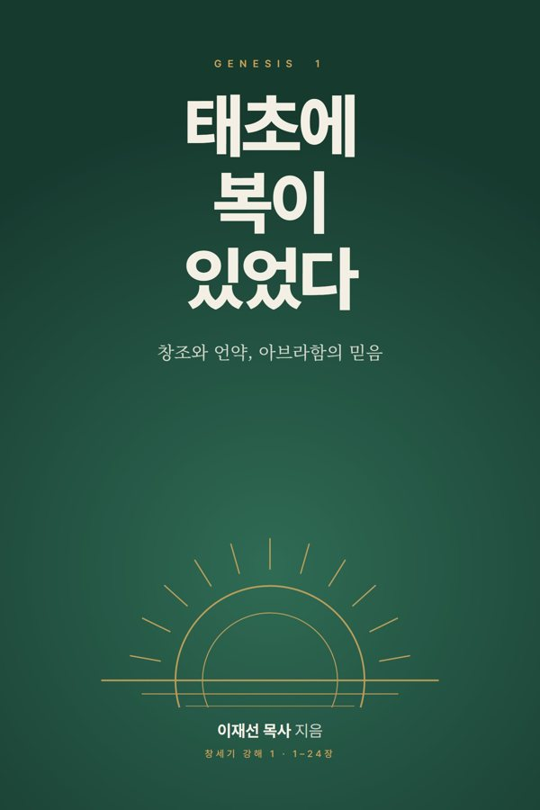
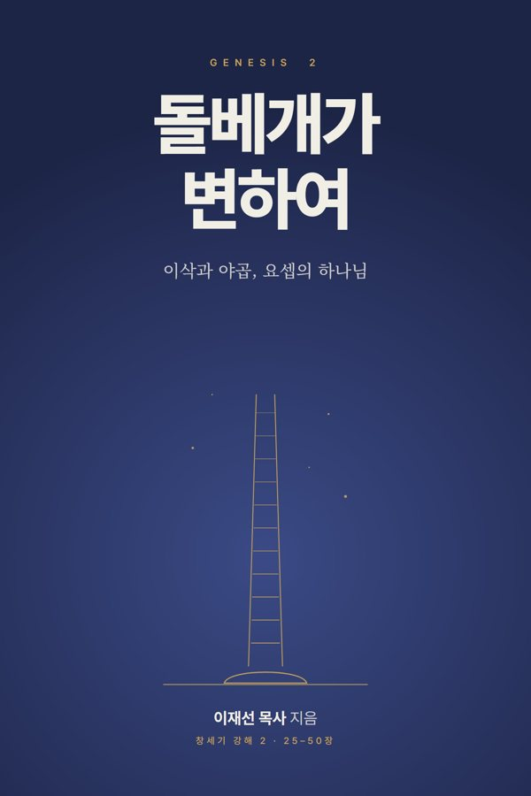
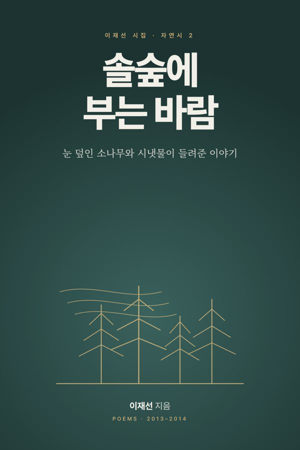

A study built over a lifetime of reading
The writings are in Korean. Browser translation (for example, Chrome's "Translate this page") works well if you would like to read them in English.
Sermon illustrations
True stories for preaching, arranged from 가 to 하 under 347 topics such as gratitude, prayer, love, faith and forgiveness. Each story comes with an application, a Bible verse and its original source.
Open the illustrations →Sermons
Sermons from the Lord's Day service and the Friday prayer meeting, shelved book by book across the 66 books of the Bible.
Open the sermon shelf →Book reviews
Reflections on books of theology and faith, and on books about the wider world.
Open the book reviews →Poems and hymn poems
Poems about nature, daily life and meditation, along with poems written for praise.
Open the poems →Pensées
A numbered notebook of thoughts on ministry, faith and life.
Open the notebook →Listen to the Bible
A project to set every chapter of the 66 books of the Bible, from Genesis to Revelation, to music. Read along with the subtitles, or play it during quiet time and prayer.
Watch on YouTube →Sermon illustrations were chosen from many sources, checked for facts, and rewritten in fresh sentences with the help of AI tools. Each one names the person, publication or book it came from.
Books by Rev. Jaesun Lee
Each book can be read online, or downloaded as an e-book (EPUB) or a print-ready PDF. All books are in Korean.

Exodus
E-book · read online or download EPUB

Genesis Exposition 1: In the Beginning There Was Blessing
52 sermons on Genesis 1–24

Genesis Exposition 2: When the Stone Pillow Was Changed
39 sermons on Genesis 25–50

Nature Poems 1: On the Path of the Prayer House
21 poems, 2011–2012

Nature Poems 2: Wind in the Pine Forest
18 poems, 2013–2014

Life Poems 1: Happiness Charging Station
31 poems on family and the dinner table
Life Poems 2: Walking Slowly
31 poems on roads and seasons
Saeam Church, Yongin
Saeam Church began holding worship services on May 3, 1970. In 2002 Siloam Church and Saechang Church united to become Saeam Church. Rev. Jaesun Lee serves as its senior pastor. Everyone is welcome.
Worship and directions
- Denomination
- Presbyterian Church in Korea (HapDong)
- Address
- 165 Gogi-ro, Suji-gu, Yongin-si, Gyeonggi-do (Dongcheon-dong), Republic of Korea
- Phone
- +82-31-262-3440
- Sunday worship
- 1st service 9:00 a.m. · 2nd service 11:00 a.m.
- Dawn prayer
- Every day at 6:00 a.m.
- Friday prayer
- Fridays at 8:30 p.m.